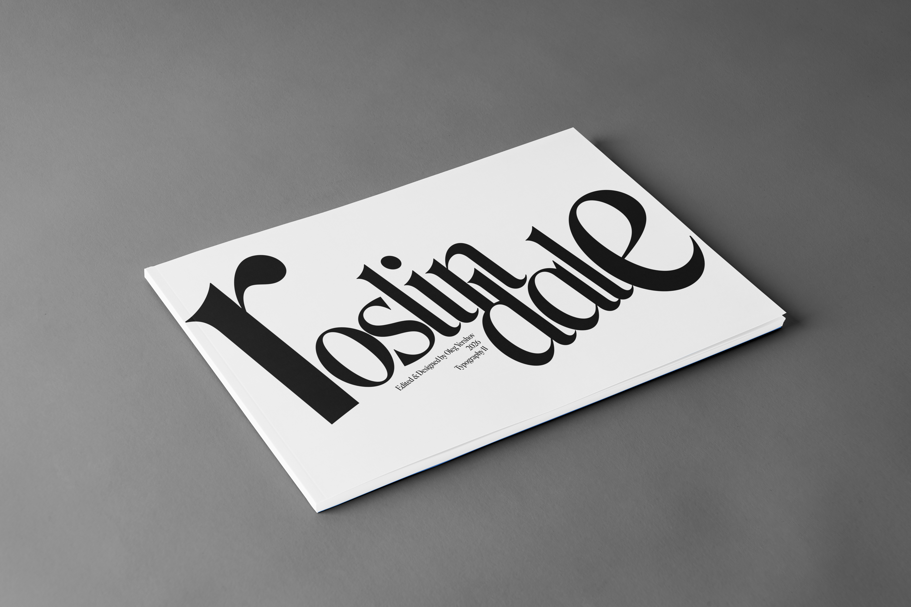

Roslindale Font
Specimen Book
This project involved designing and producing a 16-page type specimen book that demonstrates the range, history, and anatomy of the Roslindale typeface. The goal was to create a professional tool that helps designers evaluate a font’s suitability for headlines and body text, by showcasing type anatomy, type families, classification, and technical specs. I chose the Roslindale typeface for its ornate yet practical style, as well as the expansiveness of the family.
